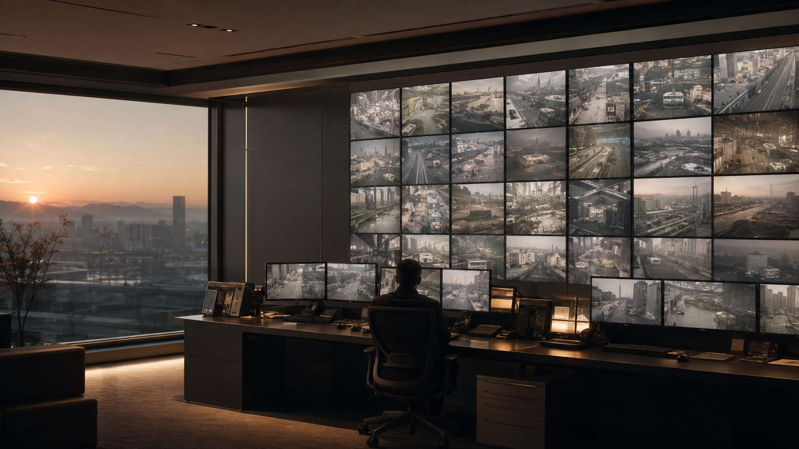
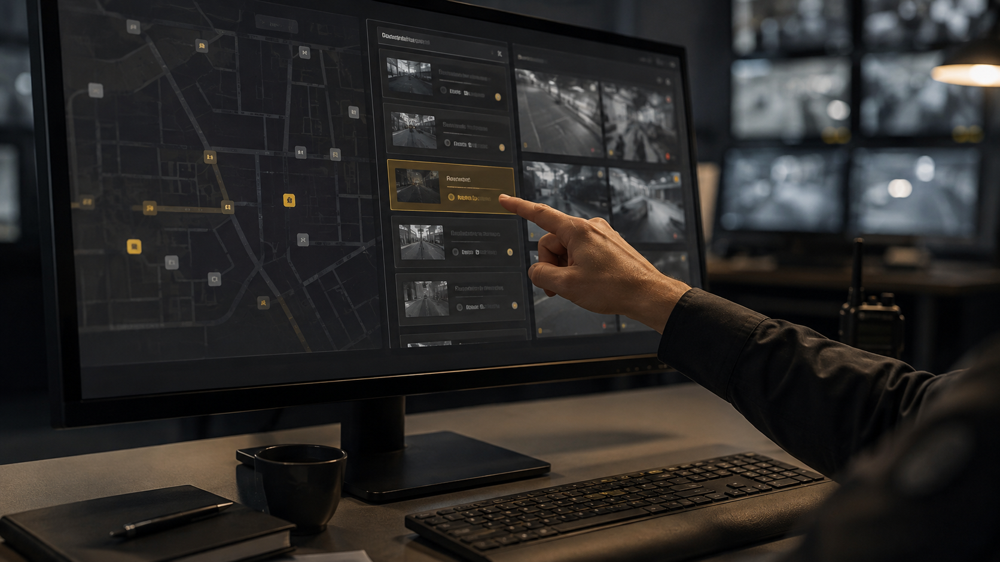
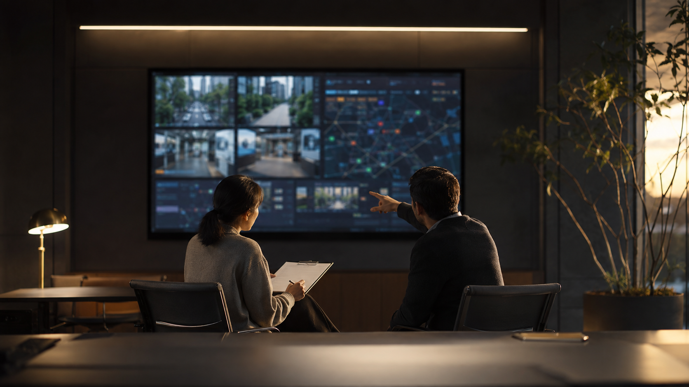

Inference Server
TensorRT · PyTorch · Video AI Analytics
02 / CASE STUDY · 2025
TECHNOLOGY STACK
TensorRT · PyTorch · Video AI Analytics
Live Stream · Transcoding · Event Clip
Event Data · Alert Queue · Real-time Update
Dashboard · Container · Monitoring
관제실의 하루는 조용하지만, 화면 속에서는 수십 개의 사건이 동시에 일어납니다. 이 프로젝트는 단순히 영상을 더 많이 보여 주는 일이 아니라, 운영자가 더 빠르고 확신 있게 판단하도록 돕는 지능형 CCTV 플랫폼을 설계한 기록입니다.

현장 인터뷰에서 가장 먼저 확인한 것은 관제 인력의 시선이었습니다. 운영자는 여러 대의 모니터와 알림 창을 오가며 상황을 파악했지만, 화면의 수가 많을수록 판단의 속도는 느려졌습니다.
문제는 카메라가 부족한 것이 아니었습니다. 이상 징후가 발생했을 때 어디에서, 왜, 지금 무엇을 해야 하는지를 한 번에 이해할 수 없다는 점이었습니다.
“알림은 계속 오는데, 지금 당장 봐야 할 장면이 무엇인지 판단하는 데 시간이 걸려요.”— 관제 운영자 인터뷰

기존 시스템의 이벤트는 같은 무게로 나열되었습니다. 그래서 AI 감지 결과, 위치, 시간, 위험도, 담당자 상태를 묶어 하나의 ‘상황 카드’로 재구성했습니다.
사용자는 카메라 번호를 기억하지 않아도 됩니다. 플랫폼은 위험도와 영향 범위를 먼저 보여 주고, 필요한 영상·과거 이력·대응 절차를 그 다음 단계에 자연스럽게 연결합니다.
위험도, 지속 시간, 구역 중요도를 반영해 가장 먼저 확인할 사건을 제시
단일 화면 대신 전후 영상과 인접 카메라를 함께 연결해 상황을 빠르게 파악
확인·전파·조치 과정을 자동으로 남겨 다음 교대자도 같은 맥락을 이어받도록 설계
프로토타입에서는 한 화면에 모든 기능을 넣지 않았습니다. 첫 화면은 ‘지금 조치할 일’에 집중하고, 상세 화면에서만 영상·지도·알림 이력·대응 가이드를 단계적으로 열도록 했습니다.
색상은 긴급 상태를 위한 신호로만 사용했습니다. 평상시 화면의 대비를 낮추고, 정말 중요한 변화에만 색이 개입하도록 하여 장시간 관제 환경의 피로도를 줄이는 방향을 택했습니다.
더 많은 정보를 보여 주는 것이 아니라, 다음 행동을 더 분명하게 만드는 것.

대표 시나리오를 바탕으로 ‘이상 감지 → 영상 확인 → 담당자 전파 → 조치 기록’ 흐름을 검증했습니다. 관제 경험이 있는 사용자에게는 익숙한 용어를, 신규 사용자에게는 명확한 안내를 제공하는 균형을 조정했습니다.
최종 결과물은 단순한 UI 시안이 아니라 우선순위 규칙, 화면 구조, 컴포넌트 원칙, 시나리오별 대응 흐름을 담은 실행 가능한 프로토타입이었습니다.
OUTCOME / VALIDATION TARGET
중요 이벤트를 우선순위 큐로 정리해
첫 확인 단계의 인지 부담을 줄이는 구조
영상·위치·이력을 연결해
사건 맥락을 한 흐름으로 이해하는 경험
교대와 협업 상황에서도 이어지는
일관된 대응 기록과 업무 기준
본 케이스 스터디는 지능형 CCTV 플랫폼을 타깃으로 구성한 포트폴리오용 시나리오입니다.
BONUS / SYSTEM BREAK
BONUS / OUTER SPACE
BONUS / PRECISION
BONUS / CLASSIC ARCADE